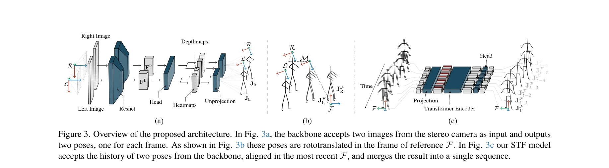

Essence

Figure 1. We introduce a large scale egocentric dataset (b) collected with a custom-made wearable capture rig (a). With
VR/AR 환경에서 일인칭 시점의 스테레오 카메라와 헤드 트래킹을 활용하여 신체 자세를 추정하는 FRAME 아키텍처를 제안하며, 대규모 실제 데이터셋을 수집하여 합성 데이터 사전학습의 필요성을 제거했다.
저자: Andrea Boscolo Camiletto, Jian Wang, Eduardo Alvarado, Rishabh Dabral, Thabo Beeler, Marc Habermann, Christian Theobalt | 날짜: 2025-03-29 | URL: https://arxiv.org/abs/2503.23094
Figure 1. We introduce a large scale egocentric dataset (b) collected with a custom-made wearable capture rig (a). With
VR/AR 환경에서 일인칭 시점의 스테레오 카메라와 헤드 트래킹을 활용하여 신체 자세를 추정하는 FRAME 아키텍처를 제안하며, 대규모 실제 데이터셋을 수집하여 합성 데이터 사전학습의 필요성을 제거했다.

Figure 3. Overview of the proposed architecture. In Fig. 3a, the backbone accepts two images from the stereo camera as i
Figure 3. Overview of the proposed architecture. In Fig. 3a, the backbone accepts two images from the stereo camera as i
총평: 일인칭 모션 캡처의 핵심 문제들(합성 데이터 의존성, 하지 정확도, 아티팩트)을 대규모 실제 데이터셋과 기하학적으로 명시적인 아키텍처로 체계적으로 해결하며, 실시간 성능과 높은 일반화 능력을 동시에 달성한 실용성 높은 연구다.